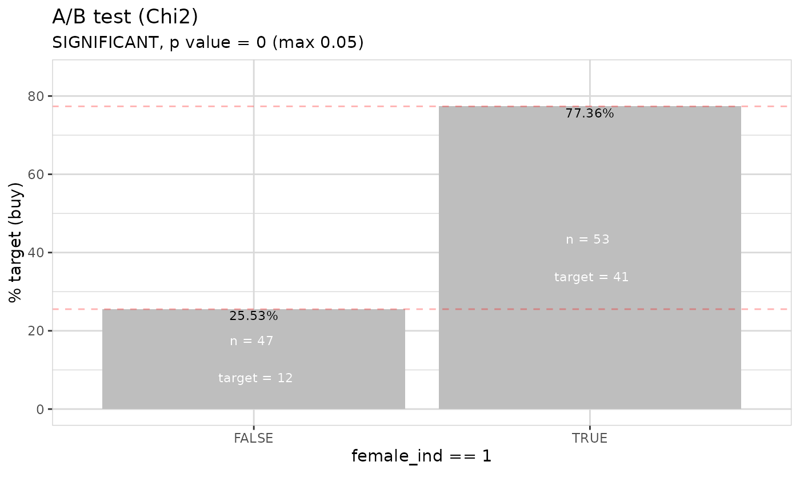
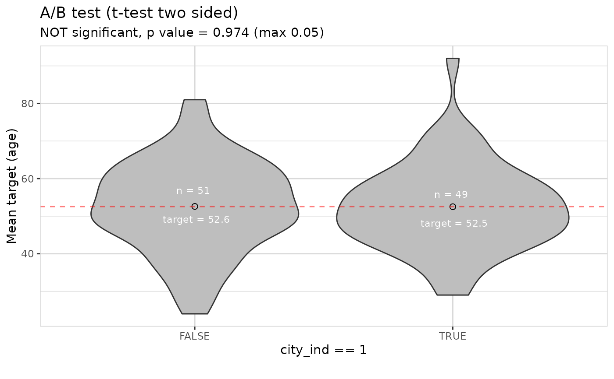
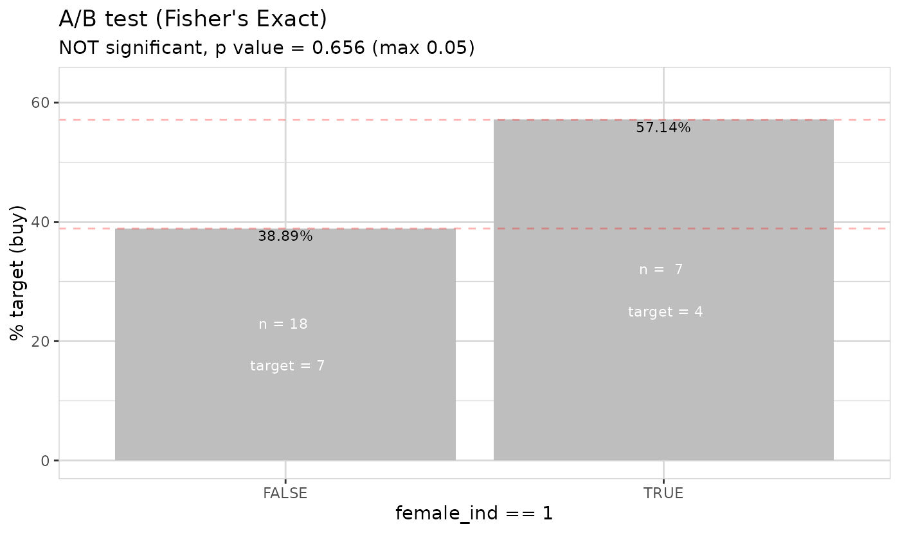

A/B testing
Examples
## Using chi2-test or t-test depending on target type
data <- create_data_buy(obs = 100)
abtest(data, female_ind == 1, target = buy) # chi2 test

abtest(data, city_ind == 1, target = age) # t test

## If small number of observations, Fisher's Exact test
## is used for a binary target (if <= 5 observations in a subgroup)
data <- create_data_buy(obs = 25, seed = 1)
abtest(data, female_ind == 1, target = buy) # Fisher's Exact test
